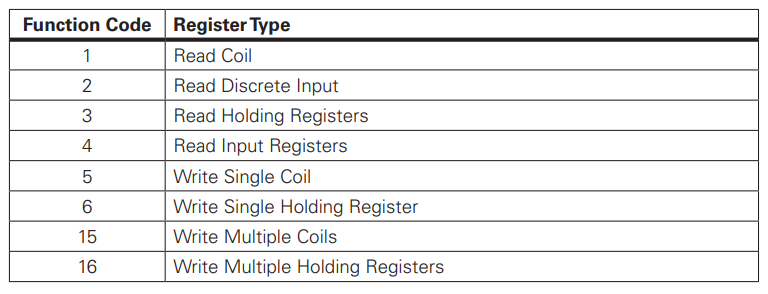
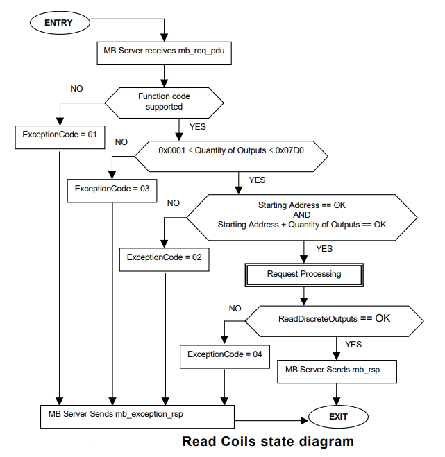

您好啊，我是 Modbus 家族成员的 RTU，同时期诞生的还有我的兄弟，它就是 ASCII。本篇呢就来让大家熟悉一下我吧，下一篇则由我兄弟 ASCII 进行介绍。好了，废话不多说，接下来就带你们来认识一下我吧。
# 描述
Modbus RTU（远程终端单元）是原始 Modbus 规范中定义的两种传输模式之一。 这两种模式是 Modbus RTU 和 ASCII，它们被设计用于支持 RS232，RS485 和 RS422 接口的串行设备。 Modbus RTU 的一个显着特点是它使用二进制编码和强大的 CRC 错误检查。 Modbus RTU 是 Modbus 协议的实现，最常用于工业应用和自动化生产设施。嘻嘻，我可是很受工业场景应用的哦。
# 通讯方式
# 帧格式
| Name | Length (bytes) | Description |
|---|---|---|
| Address | 1 | Node address（节点地址） |
| Function | 1 | Function code（功能代码） |
| Data | n | n is the number of data bytes, it depends on function<br/>（n 是数据字节数，它取决于功能码） |
| CRC | 2 | Cyclic redundancy check<br/>（CRC 校验码） |
在 RTU 模式下，消息以至少 3.5 个字符的静默间隔为开始，以至少 3.5 个字符的类似间隔结束。这是最容易实现的以波特率在网络上使用的字符次数的倍数 (如下图中所示的 T1 - T2 - T3 - T4)。
| START | ADDRESS | FUNCTION | DATA | CRC CHECK | END |
|---|---|---|---|---|---|
| *T1–T2–T3–T4 | 8 BITS | 8 BITS | n x 8 BITS | 16 BITS | *T1–T2–T3–T4 |
*T1-T2-T3-T4：表示不通信时的 3.5 个字符。
所有其他字段都由 8 位数据组成。

# 功能码
Modbus 设备最常用的功能代码如下表所示：

# 功能 01（01H）读线圈
请求：
名称 长度 说明 设备地址 1 字节 功能码 1 字节 0x01 开始地址 2 字节 0x0000 to 0xFFFF 线圈数量 2 字节 1 to 2000 (0x7D0) CRC 校验码 2 字节 指令：设备地址（1byte）+ 0x01（1byte）+ 起始地址（2byte）+ 线圈数（2byte）+ CRC（2byte）
应答：
名称 长度 说明 设备地址 1 字节 功能码 1 字节 0x01 线圈数量对应的字节数 1 字节 *N 线圈数据 1 1 字节 线圈数据 2 1 字节 线圈数据 n 1 字节 n = N or N+1 CRC 校验码 2 字节 *N = 线圈数量 / 8，如果余数非 0，则 N = N+1
指令：设备地址（1byte）+ 0x01（1byte）+ 字节数（1byte）+ 线圈状态（Nbyte）+ CRC（2byte）
错误返回：
名称 长度 说明 设备地址 1 字节 功能码 1 字节 0x81 错误码 1 字节 01 or 02 or 03 or 04 CRC 校验码 2 字节
流程图：

# 功能 02（02H）读离散输入
请求：
名称 长度 说明 设备地址 1 字节 功能码 1 字节 0x02 开始地址 2 字节 0x0000 to 0xFFFF 离散状态数量 2 字节 1 to 2000 (0x7D0) CRC 校验码 2 字节 指令：设备地址（1byte）+ 0x02（1byte）+ 起始地址（2byte）+ 离散数（2byte）+ CRC（2byte）
应答：
名称 长度 说明 设备地址 1 字节 功能码 1 字节 0x02 离散状态数量对应的字节数 1 字节 *N 离散数据 1 1 字节 离散数据 2 1 字节 离散数据 n 1 字节 n = N or N+1 CRC 校验码 2 字节 *N = 离散状态数量 / 8，如果余数非 0，则 N = N+1
指令：设备地址（1byte）+ 0x01（1byte）+ 字节数（1byte）+ 离散状态（Nbyte）+ CRC（2byte）
错误返回：
名称 长度 说明 设备地址 1 字节 功能码 1 字节 0x82 错误码 1 字节 01 or 02 or 03 or 04 CRC 校验码 2 字节
流程图：

# 功能 03（03H）读保持寄存器
请求：
名称 长度 说明 设备地址 1 字节 功能码 1 字节 0x03 开始地址 2 字节 0x0000 to 0xFFFF 保持寄存器数量 2 字节 1 to 125 (0x7D) CRC 校验码 2 字节 指令：设备地址（1byte）+ 0x03（1byte）+ 起始地址（2byte）+ 保持寄存器数（2byte）+ CRC（2byte）
应答：
名称 长度 说明 设备地址 1 字节 功能码 1 字节 0x03 保持寄存器数量对应的字节数 1 字节 2 * N 寄存器数值 1 2 字节 寄存器数值 2 2 字节 寄存器数值 n 2 字节 n = N CRC 校验码 2 字节 指令：设备地址（1byte）+ 0x03（1byte）+ 字节数（1byte）+ 保持寄存器值（2 * Nbyte）+ CRC（2byte）
错误返回：
名称 长度 说明 设备地址 1 字节 功能码 1 字节 0x83 错误码 1 字节 01 or 02 or 03 or 04 CRC 校验码 2 字节
流程图：

# 功能 04（04H）读输入寄存器
请求：
名称 长度 说明 设备地址 1 字节 功能码 1 字节 0x04 开始地址 2 字节 0x0000 to 0xFFFF 输入寄存器数量 2 字节 1 to 125 (0x7D) CRC 校验码 2 字节 指令：设备地址（1byte）+ 0x04（1byte）+ 起始地址（2byte）+ 输入寄存器数（2byte）+ CRC（2byte）
应答：
名称 长度 说明 设备地址 1 字节 功能码 1 字节 0x04 保持寄存器数量对应的字节数 1 字节 2 * N 寄存器数值 1 2 字节 寄存器数值 2 2 字节 寄存器数值 n 2 字节 n = N CRC 校验码 2 字节 指令：设备地址（1byte）+ 0x04（1byte）+ 字节数（1byte）+ 输入寄存器值（2 * Nbyte）+ CRC（2byte）
错误返回：
名称 长度 说明 设备地址 1 字节 功能码 1 字节 0x84 错误码 1 字节 01 or 02 or 03 or 04 CRC 校验码 2 字节
流程图：

# 功能 05（05H）写单线圈
请求：
名称 长度 说明 设备地址 1 字节 功能码 1 字节 0x05 输出地址 2 字节 0x0000 to 0xFFFF * 线圈数值 2 字节 0x0000 or 0xFF00 CRC 校验码 2 字节 * 线圈数值 ：0xFF00 -> 请求线圈状态为 ON
0x0000 -> 请求线圈状态为 OFF
其他值 -> 非法且对线圈不起作用
指令：设备地址（1byte）+ 0x05（1byte）+ 输出地址（2byte）+ 线圈值（2byte）+ CRC（2byte）
应答：
名称 长度 说明 设备地址 1 字节 功能码 1 字节 0x05 输出地址 2 字节 0x0000 to 0xFFFF 线圈数值 2 字节 0x0000 or 0xFF00 CRC 校验码 2 字节 指令：正常响应是请求的应答
错误返回：
名称 长度 说明 设备地址 1 字节 功能码 1 字节 0x85 错误码 1 字节 01 or 02 or 03 or 04 CRC 校验码 2 字节
流程图：

# 功能 06（06H）写单个保持寄存器
请求：
名称 长度 说明 设备地址 1 字节 功能码 1 字节 0x06 寄存器地址 2 字节 0x0000 to 0xFFFF 寄存器数值 2 字节 0x0000 to 0xFFFF CRC 校验码 2 字节 指令：设备地址（1byte）+ 0x06（1byte）+ 保持寄存器地址（2byte）+ 保持寄存器值（2byte）+ CRC（2byte）
应答：
名称 长度 说明 设备地址 1 字节 功能码 1 字节 0x06 寄存器地址 2 字节 0x0000 to 0xFFFF 寄存器数值 2 字节 0x0000 to 0xFFFF CRC 校验码 2 字节 指令：正常响应是请求的应答
错误返回：
名称 长度 说明 设备地址 1 字节 功能码 1 字节 0x86 错误码 1 字节 01 or 02 or 03 or 04 CRC 校验码 2 字节
流程图：

# 功能 15（0FH）写多个线圈
请求：
名称 长度 说明 设备地址 1 字节 功能码 1 字节 0x0F 开始地址 2 字节 0x0000 to 0xFFFF 线圈输出数量 2 字节 1 to 1968 (0x7B0) 线圈数量对应的字节数 1 字节 *N 线圈输出数据 1 1 字节 线圈输出数据 2 1 字节 线圈输出数据 n 1 字节 n = N or N+1 CRC 校验码 2 字节 *N = 线圈输出数量 / 8，如果余数非 0，则 N = N+1
指令：设备地址（1byte）+ 0x0F（1byte）+ 起始地址（2byte）+ 线圈输出数（2byte）+ 字节数（1byte）+ 线圈输出数据（Nbyte）+ CRC（2byte）
应答：
名称 长度 说明 设备地址 1 字节 功能码 1 字节 0x0F 开始地址 2 字节 0x0000 to 0xFFFF 线圈输出数量 2 字节 1 to 1968 (0x7B0) CRC 校验码 2 字节 指令：设备地址（1byte）+ 0x0F（1byte）+ 起始地址（2byte）+ 线圈输出数（2byte）+ CRC（2byte）
错误返回：
名称 长度 说明 设备地址 1 字节 功能码 1 字节 0x8F 错误码 1 字节 01 or 02 or 03 or 04 CRC 校验码 2 字节
流程图：

# 功能 16（10H）写多个保持寄存器
请求：
名称 长度 说明 设备地址 1 字节 功能码 1 字节 0x10 开始地址 2 字节 0x0000 to 0xFFFF 寄存器数量 2 字节 1 to 123 (0x7B) 寄存器数量对应的字节数 1 字节 2 * N 寄存器数值 1 2 字节 寄存器数值 2 2 字节 寄存器数值 n 2 字节 n = N CRC 校验码 2 字节 指令：设备地址（1byte）+ 0x10（1byte）+ 起始地址（2byte）+ 寄存器数（2byte）+ 字节数（1byte）+ 寄存器数值（2 * Nbyte）+ CRC（2byte）
应答：
名称 长度 说明 设备地址 1 字节 功能码 1 字节 0x10 开始地址 2 字节 0x0000 to 0xFFFF 寄存器数量 2 字节 1 to 123 (0x7B) CRC 校验码 2 字节 指令：设备地址（1byte）+ 0x10（1byte）+ 起始地址（2byte）+ 保持寄存器数（2byte）+ CRC（2byte）
错误返回：
名称 长度 说明 设备地址 1 字节 功能码 1 字节 0x90 错误码 1 字节 01 or 02 or 03 or 04 CRC 校验码 2 字节
流程图：

# CRC 校验
CRC16_MODBUS 查表法：
static const unsigned char aucCRCHi[] = {
0x00, 0xC1, 0x81, 0x40, 0x01, 0xC0, 0x80, 0x41, 0x01, 0xC0, 0x80, 0x41,
0x00, 0xC1, 0x81, 0x40, 0x01, 0xC0, 0x80, 0x41, 0x00, 0xC1, 0x81, 0x40,
0x00, 0xC1, 0x81, 0x40, 0x01, 0xC0, 0x80, 0x41, 0x01, 0xC0, 0x80, 0x41,
0x00, 0xC1, 0x81, 0x40, 0x00, 0xC1, 0x81, 0x40, 0x01, 0xC0, 0x80, 0x41,
0x00, 0xC1, 0x81, 0x40, 0x01, 0xC0, 0x80, 0x41, 0x01, 0xC0, 0x80, 0x41,
0x00, 0xC1, 0x81, 0x40, 0x01, 0xC0, 0x80, 0x41, 0x00, 0xC1, 0x81, 0x40,
0x00, 0xC1, 0x81, 0x40, 0x01, 0xC0, 0x80, 0x41, 0x00, 0xC1, 0x81, 0x40,
0x01, 0xC0, 0x80, 0x41, 0x01, 0xC0, 0x80, 0x41, 0x00, 0xC1, 0x81, 0x40,
0x00, 0xC1, 0x81, 0x40, 0x01, 0xC0, 0x80, 0x41, 0x01, 0xC0, 0x80, 0x41,
0x00, 0xC1, 0x81, 0x40, 0x01, 0xC0, 0x80, 0x41, 0x00, 0xC1, 0x81, 0x40,
0x00, 0xC1, 0x81, 0x40, 0x01, 0xC0, 0x80, 0x41, 0x01, 0xC0, 0x80, 0x41,
0x00, 0xC1, 0x81, 0x40, 0x00, 0xC1, 0x81, 0x40, 0x01, 0xC0, 0x80, 0x41,
0x00, 0xC1, 0x81, 0x40, 0x01, 0xC0, 0x80, 0x41, 0x01, 0xC0, 0x80, 0x41,
0x00, 0xC1, 0x81, 0x40, 0x00, 0xC1, 0x81, 0x40, 0x01, 0xC0, 0x80, 0x41,
0x01, 0xC0, 0x80, 0x41, 0x00, 0xC1, 0x81, 0x40, 0x01, 0xC0, 0x80, 0x41,
0x00, 0xC1, 0x81, 0x40, 0x00, 0xC1, 0x81, 0x40, 0x01, 0xC0, 0x80, 0x41,
0x00, 0xC1, 0x81, 0x40, 0x01, 0xC0, 0x80, 0x41, 0x01, 0xC0, 0x80, 0x41,
0x00, 0xC1, 0x81, 0x40, 0x01, 0xC0, 0x80, 0x41, 0x00, 0xC1, 0x81, 0x40,
0x00, 0xC1, 0x81, 0x40, 0x01, 0xC0, 0x80, 0x41, 0x01, 0xC0, 0x80, 0x41,
0x00, 0xC1, 0x81, 0x40, 0x00, 0xC1, 0x81, 0x40, 0x01, 0xC0, 0x80, 0x41,
0x00, 0xC1, 0x81, 0x40, 0x01, 0xC0, 0x80, 0x41, 0x01, 0xC0, 0x80, 0x41,
0x00, 0xC1, 0x81, 0x40
};
static const unsigned char aucCRCLo[] = {
0x00, 0xC0, 0xC1, 0x01, 0xC3, 0x03, 0x02, 0xC2, 0xC6, 0x06, 0x07, 0xC7,
0x05, 0xC5, 0xC4, 0x04, 0xCC, 0x0C, 0x0D, 0xCD, 0x0F, 0xCF, 0xCE, 0x0E,
0x0A, 0xCA, 0xCB, 0x0B, 0xC9, 0x09, 0x08, 0xC8, 0xD8, 0x18, 0x19, 0xD9,
0x1B, 0xDB, 0xDA, 0x1A, 0x1E, 0xDE, 0xDF, 0x1F, 0xDD, 0x1D, 0x1C, 0xDC,
0x14, 0xD4, 0xD5, 0x15, 0xD7, 0x17, 0x16, 0xD6, 0xD2, 0x12, 0x13, 0xD3,
0x11, 0xD1, 0xD0, 0x10, 0xF0, 0x30, 0x31, 0xF1, 0x33, 0xF3, 0xF2, 0x32,
0x36, 0xF6, 0xF7, 0x37, 0xF5, 0x35, 0x34, 0xF4, 0x3C, 0xFC, 0xFD, 0x3D,
0xFF, 0x3F, 0x3E, 0xFE, 0xFA, 0x3A, 0x3B, 0xFB, 0x39, 0xF9, 0xF8, 0x38,
0x28, 0xE8, 0xE9, 0x29, 0xEB, 0x2B, 0x2A, 0xEA, 0xEE, 0x2E, 0x2F, 0xEF,
0x2D, 0xED, 0xEC, 0x2C, 0xE4, 0x24, 0x25, 0xE5, 0x27, 0xE7, 0xE6, 0x26,
0x22, 0xE2, 0xE3, 0x23, 0xE1, 0x21, 0x20, 0xE0, 0xA0, 0x60, 0x61, 0xA1,
0x63, 0xA3, 0xA2, 0x62, 0x66, 0xA6, 0xA7, 0x67, 0xA5, 0x65, 0x64, 0xA4,
0x6C, 0xAC, 0xAD, 0x6D, 0xAF, 0x6F, 0x6E, 0xAE, 0xAA, 0x6A, 0x6B, 0xAB,
0x69, 0xA9, 0xA8, 0x68, 0x78, 0xB8, 0xB9, 0x79, 0xBB, 0x7B, 0x7A, 0xBA,
0xBE, 0x7E, 0x7F, 0xBF, 0x7D, 0xBD, 0xBC, 0x7C, 0xB4, 0x74, 0x75, 0xB5,
0x77, 0xB7, 0xB6, 0x76, 0x72, 0xB2, 0xB3, 0x73, 0xB1, 0x71, 0x70, 0xB0,
0x50, 0x90, 0x91, 0x51, 0x93, 0x53, 0x52, 0x92, 0x96, 0x56, 0x57, 0x97,
0x55, 0x95, 0x94, 0x54, 0x9C, 0x5C, 0x5D, 0x9D, 0x5F, 0x9F, 0x9E, 0x5E,
0x5A, 0x9A, 0x9B, 0x5B, 0x99, 0x59, 0x58, 0x98, 0x88, 0x48, 0x49, 0x89,
0x4B, 0x8B, 0x8A, 0x4A, 0x4E, 0x8E, 0x8F, 0x4F, 0x8D, 0x4D, 0x4C, 0x8C,
0x44, 0x84, 0x85, 0x45, 0x87, 0x47, 0x46, 0x86, 0x82, 0x42, 0x43, 0x83,
0x41, 0x81, 0x80, 0x40
};
unsigned short
usMBCRC16( unsigned char * pucFrame, unsigned short usLen )
{unsigned char ucCRCHi = 0xFF;
unsigned char ucCRCLo = 0xFF;
int iIndex;
while( usLen-- )
{iIndex = ucCRCLo ^ *( pucFrame++ );
ucCRCLo = ( unsigned char )( ucCRCHi ^ aucCRCHi[iIndex] );
ucCRCHi = aucCRCLo[iIndex];
}return ( unsigned short )( ucCRCHi << 8 | ucCRCLo );
}CRC16_MODBUS 运算法：
运算分析及计算，可看文章 常用校验算法 - CRC 章节
# 实例应用
测试应用可看以前的文章：
Nano130 之 FreeModbus 移植